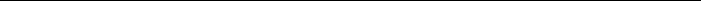

+615 877 6302 ◊ apetrosyan3@gatech.edu ◊ www.armenakpetrosyan.com

Georgia Institute of Technology, Atlanta, GA, USA Mentor: Prof. Christopher Heil
Oak Ridge National Laboratory, TN, USA Mentor: Prof. Clayton Webster

Vanderbilt University, Nashville, TN, USA PhD advisor: Prof. Akram Aldroubi
Master’s advisor: Prof. Artur Sahakian

A. Petrosyan, K. Pieper, and H. Tran
In preperation
K. Pieper and A. Petrosyan
Applied and Computational Harmonic Analysis, 61, pp. 25-56, 2022
A. Aldroubi, C. Cabrelli, U. Molter, and A. Petrosyan
Excursions in Harmonic Analysis, Volume 6, pp. 211-220. Birkh¨auser, Cham, 2021
K. Hamm, B. Hayes, and A. Petrosyan
Journal d’Analyse Math´ematique, 143(2), pp. 503-534, 2021
A. Dereventsov, A. Petrosyan, and C. Webster
Mathematical and Scientific Machine Learning, pp. 128-143. PMLR, 2020.
K. Hamm, B. Hayes, and A. Petrosyan
13th International Conference on Sampling Theory and Applications (SampTA), pp. 1-4. IEEE, 2019.
A. Aldroubi, L. Huang, A. Petrosyan
Journal of Mathematical Analysis and Applications, 478(2), 1059-1084, 2019
A. Petrosyan, H. Tran, and C. Webster
Applied Numerical Mathematics, 144, p. 140-150, 2019
A. Aldroubi, C. Cabrelli, A. F. Cakmak, U. Molter, and A. Petrosyan
Journal of Functional Analysis, 272(3), p. 1121-1146, 2017
A. Aldroubi and A. Petrosyan
Frames and Other Bases in Abstract and Function Spaces, pp. 15-26. Birkh¨auser, Cham, 2017.
R. Aceska, A. Aldroubi, J. Davis, and A. Petrosyan
AMS Contemporary Mathematics (CONM) book series, p. 139-148, 2013

Georgia Tech-ORNL seed grant ($4000).
Member of the Grand Prize winner team for ORNL SNS Neutral Scattering Ugly Data challenge competition. Details can be found at https://datadays.pages.ornl.gov/SNS/.

co-organized with Akram Aldroubi, Keaton Hamm and Javad Mashreghi, Fields Institute, 2022
16th International Conferences on Approximation Theory
co-organized with with Bosu Choi and Mark Iwen, University of Tennessee at Knoxville, September 21-22, 2019
16th International Conferences on Approximation Theoryco-organized with with Anton Dereventsov, Van- derbilt University, TN, May 19, 2019

CodEx Seminar
Online, September 7, 2021
Title: “Integral neural networks with weight penalization.”
Mathematical and Scientific Machine Learning (MSML 2020), Princeton University (held online), July 21, 2020.
Title: “Integral neural networks with the ReLU activation function.”
Applied Mathematics Seminar,
University of California, Los Angeles, March 4, 2020.
Title: “Neural network integral representations and sparse networks.”
Conference on Computational Mathematics and Applications, University of Nevada, Las Vegas, October 25 - 27, 2019. Title: “Neural network integral representations.”
SIAM SEAS 2019 Annual Meeting,
University of Tennessee, Knoxville, September 20-22, 2019.
Title: “Neural network integral representations on the sphere for the ReLU activation function.”
13th SampTA (Sampling Theory and Applications), University of Bordeaux, France, July 8-12, 2019.
Title: “Rearranged Fourier Series and Generalizations to Non-commutative Groups.”
Signal Processing with Adaptive Sparse Structured Representations (SPARS) workshop, ENSEEIHT, Toulouse, France, July 1-4, 2019.
Title: “Joint sparse recovery through manifold optimization.”
16th International Conferences on Approximation Theory, Vanderbilt University, Nashville, TN, May 19-22, 2019.
Title: “Rearranged Fourier Series and Generalizations to Non-commutative Groups.”
AMS Fall Western Sectional Meeting,
San Francisco State University, San Francisco, CA, October 27-28, 2018. Title: “Joint sparse recovery through manifold optimization.”
7th International Conference on Computational Harmonic Analysis and 60th Birthday Workshop for Akram Aldroubi,
Nashville TN, May 14-19, 2018.
Title: “Joint sparse recovery through manifold optimization.”
BIRS Numerical Analysis and Approximation Theory meets Data Science, Banff, Canada, April 22-28, 2018.
Title: “Joint sparse recovery through manifold optimization.”

Fall 2022.
Spring 2022.
Fall 2021.
Fall 2020, Spring 2021, Summer 2021.